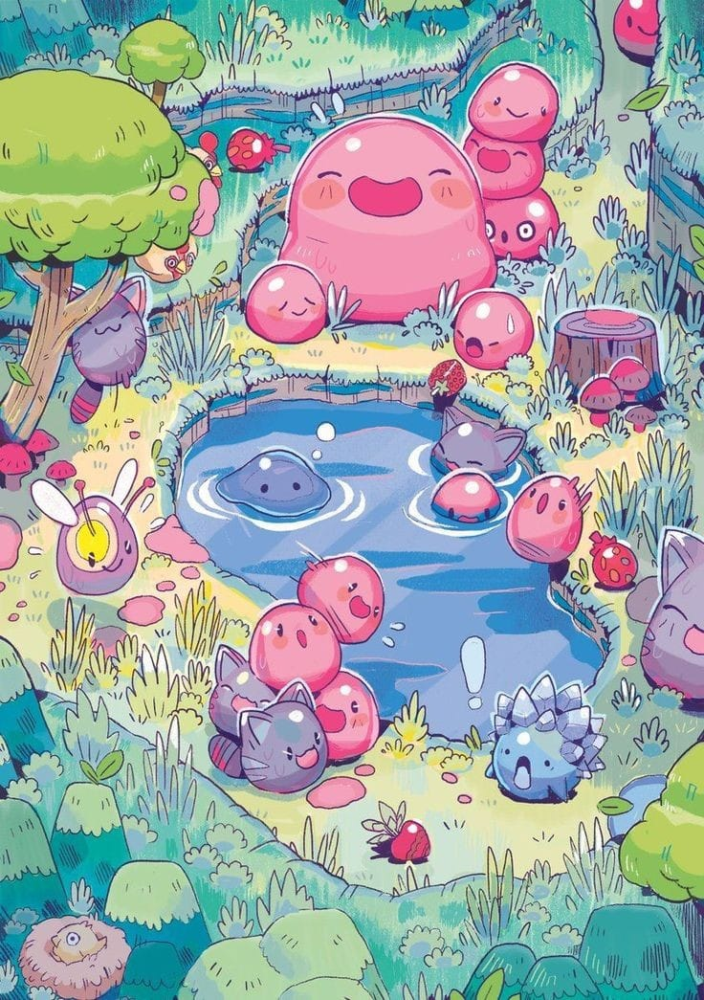

Slimes

Recursos
NPC
Descripción
En este código, he creado la clase .texto que contiene un h2 con el texto "Descripción"
y un espacio editable (contenteditable="true") para ingresar letras.
Esta clase tiene un formato circular, está ubicada a la izquierda de la página
y tiene un borde y fondo específicos. Puedes ajustar los estilos según tus preferencias.
Ubicación
En este código, he creado la clase .texto2 que contiene un h2 con el texto "Ubicación"
y un espacio editable (contenteditable="true") para ingresar letras.
Esta clase tiene un formato circular, está ubicada a la izquierda de la página
y tiene un borde y fondo específicos. Puedes ajustar los estilos según tus preferencias.